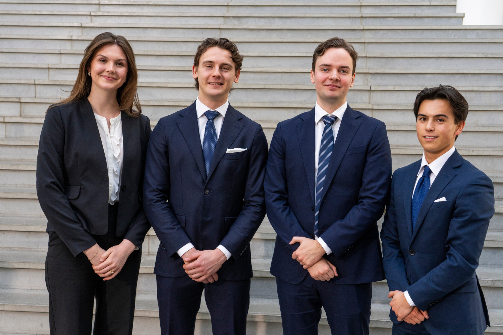
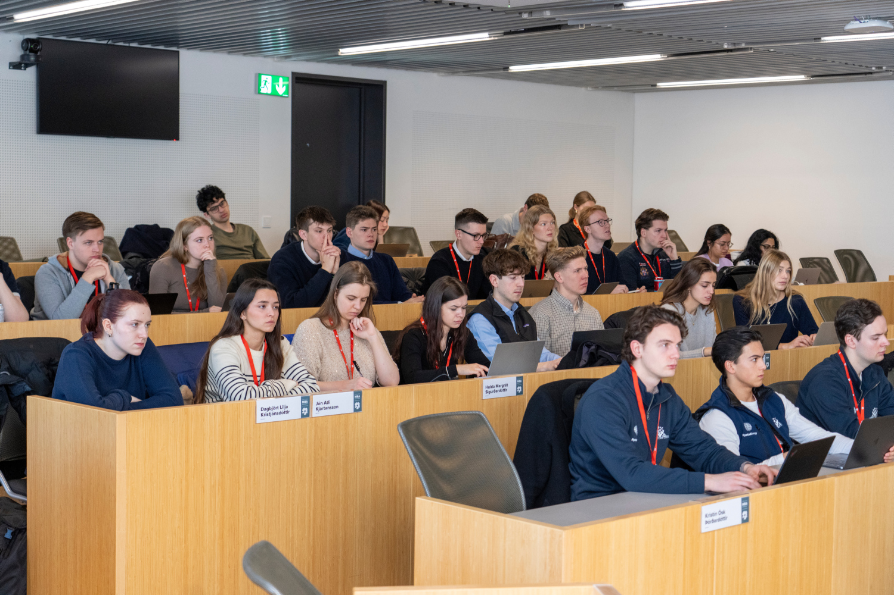
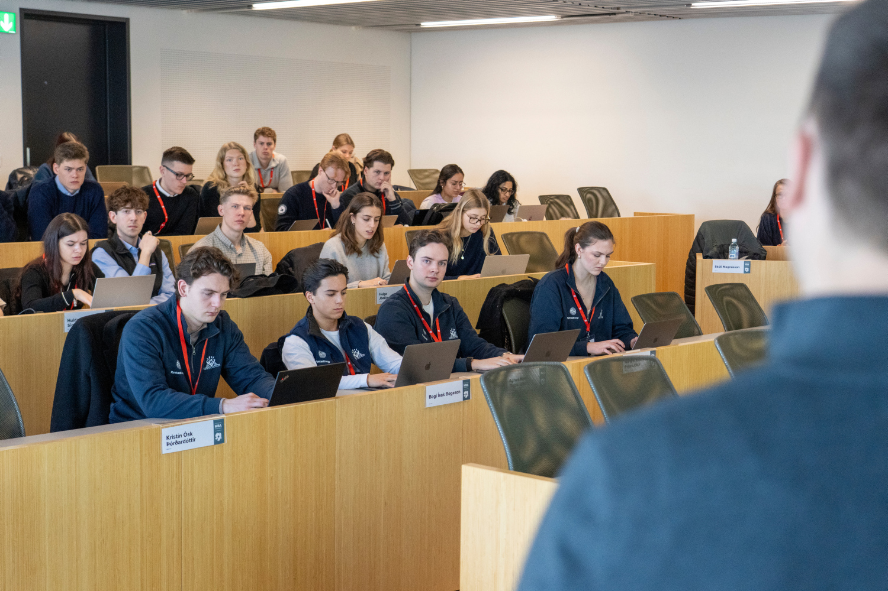
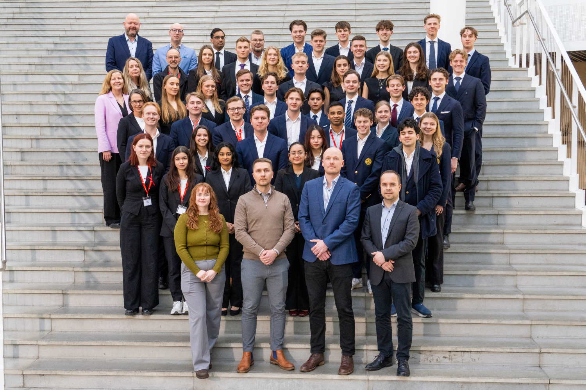
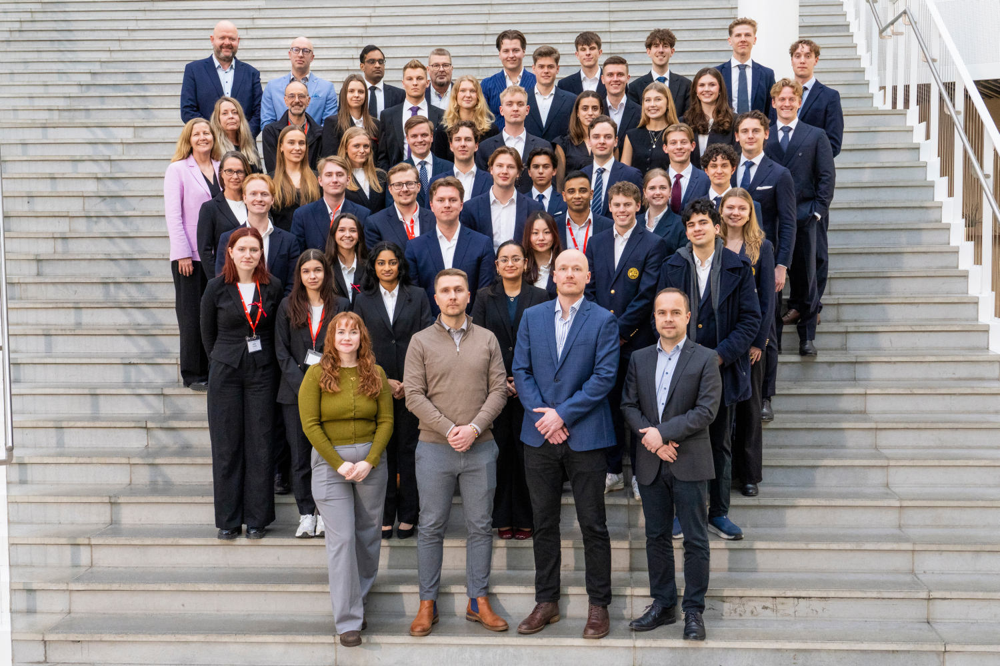
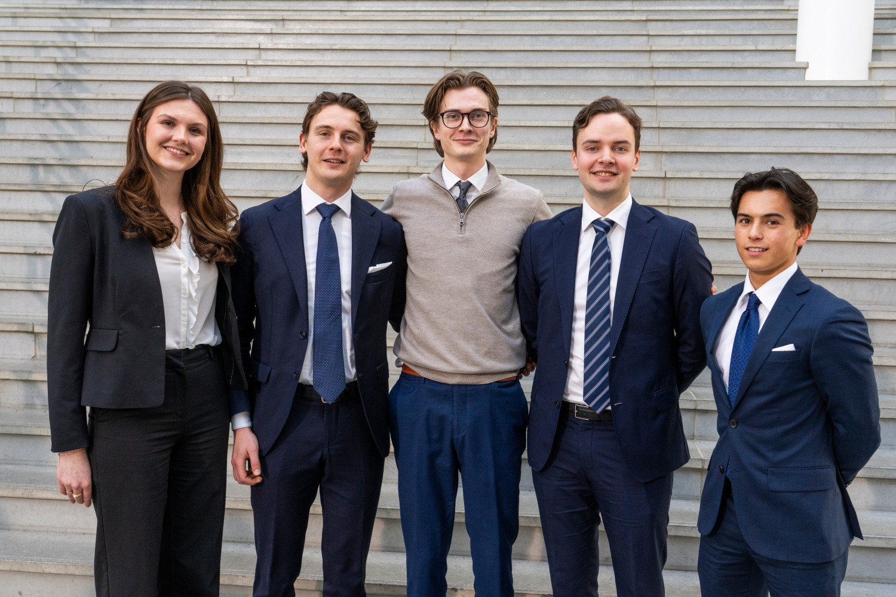
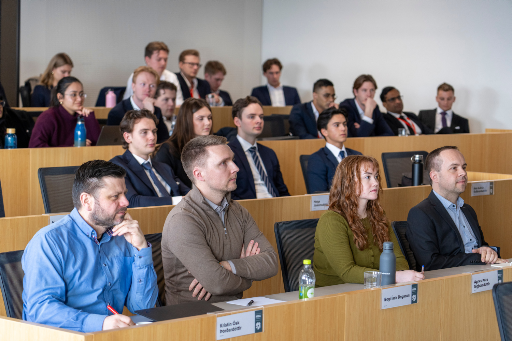

Nordic Case Challenge 2026.

Mars 2026, Bergen. Fem av oss fra NHHS Case Club fikk plass i Division A på Nordic Case Challenge. 15 timer på å levere en strategi til Alvotech-styret, et biopharma-selskap notert på Nasdaq Iceland som lager biosimilarer. Vi endte på 2.plass.
Dette er ikke et brag-innlegg. Det er det jeg satt igjen med.
Saken
Alvotech bygger biosimilarer, altså kopier av biologiske legemidler etter at originalpatentet løper ut. Markedet vokser raskt fordi en lang rekke blockbuster-biologika mister patentbeskyttelse de neste fem årene. Spørsmålet til oss var hvordan Alvotech burde posisjonere seg i et marked som plutselig blir veldig konkurranseintensivt.
Vi var fem stykker. Jeg hadde rollen Head of Financials/Impact, som i praksis betyr at jeg eide den finansielle modellen og bærekraftvurderingen.


Det vanskeligste
Biopharma er ikke vår bakgrunn. Ingen av oss hadde levert mot dette segmentet før. De første 90 minuttene gikk med på å forstå verdikjeden: hvordan man får en biosimilar gjennom FDA og EMA, hva referansebiologika faktisk koster, og hvordan apotekssystemet i USA og Europa skiller seg.
Det er den biten som er lærerik. Du har 15 timer. Du kan ikke lese deg flat. Du må bestemme tidlig hva du IKKE skal grave i, og leve med at du ikke vet alt.

Det vi gjorde annerledes
Tre ting som jeg tror utgjorde forskjellen.
Først: Vi delte 15 timer i tre faser før vi åpnet datapakken. Forstå (4t), bestemme (4t), produsere (7t). Det høres åpenbart ut. Det er det ikke når klokka tikker og noen alltid har lyst til å gå tilbake til research.
Andre: Vi tegnet ut beslutningstreet før vi gjorde finansielle modeller. Vi visste hva svaret skulle være formulert som før vi regnet på det. Det sparte oss for to-tre timer med modeller som ikke ville svart på spørsmålet uansett.
Tredje: Den siste timen brukte vi kun til å sparre på overgangen mellom slidene. Ikke innholdet. Hvor presentatøren skulle stå, hvor blikkene skulle lande. Det er den biten teamene som taper sjelden bruker tid på.


Det jeg lærte
Strukturert problemløsning under tidspress handler mindre om verktøyene (rammeverk, modeller, frameworks) og mer om disiplinen til å kutte bort det som ikke svarer på spørsmålet. Det er ubehagelig. Du kommer til å føle at du ignorerer noe relevant. Som regel er det relevant, men det er ikke avgjørende.
Det andre jeg satt igjen med: Et team med tydelig rolle-fordeling slår et team med flinkere folk men uklare ansvar. Vi var ikke det smarteste laget i Division A. Vi var det laget som visste hvem som tok hvilke beslutninger.
2.plass er fint. Men det vi gjorde best var prosessen, ikke resultatet.
